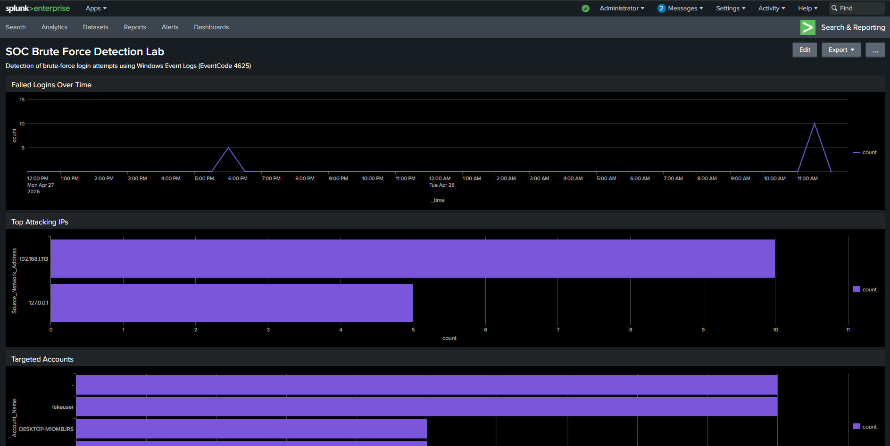

Projects
Hands-on cybersecurity projects focused on SIEM monitoring, threat detection, and real-world attack simulation.
Splunk SIEM Lab – Brute Force Detection
Built a full SIEM lab to simulate brute-force login attacks and detect them using log analysis and dashboards.
- Deployed Splunk on Ubuntu Server
- Configured Windows log forwarding using Universal Forwarder
- Simulated brute-force attacks from Kali Linux
- Analysed Windows Security Event Logs (EventCode 4625)
- Identified attacker IPs and repeated failed logins
- Built dashboards to visualise attack patterns
